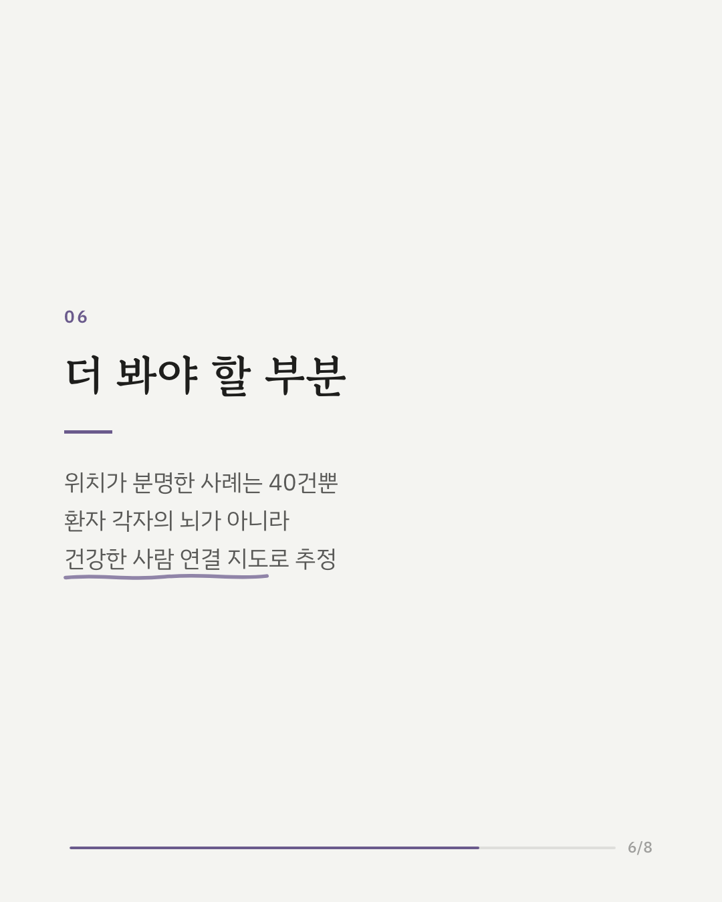
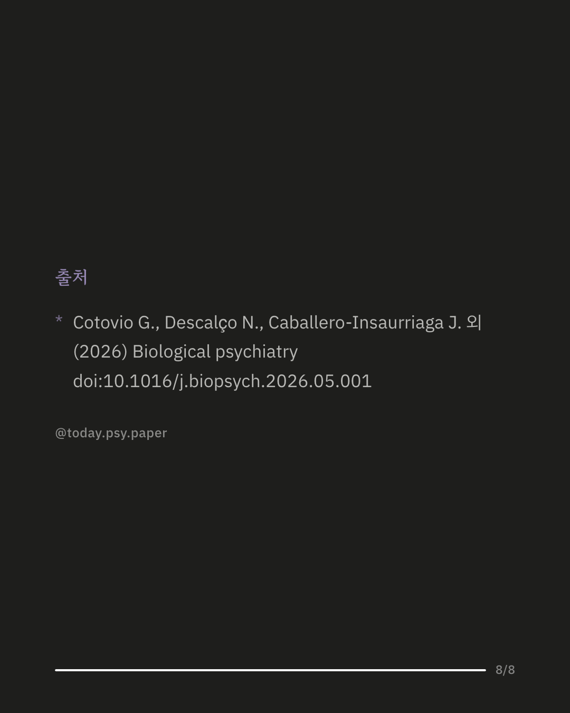

강박 장애는 대개 뚜렷한 원인 없이 생기지만, 뇌졸중 같은 뇌 손상 뒤에 새로 나타나는 경우도 있습니다. 연구진은 이런 강박증 사례가 뇌의 어느 부위, 어떤 회로와 관련되는지 살펴봤습니다. 문헌을 체계적으로 검색해 뇌 손상 후 강박 장애 129건을 모았고, 그중 손상 위치가 분명한 40건을 강박이 없던 뇌 손상 608건과 비교했습니다. 건강한 사람 1,000명의 뇌 연결 지도를 이용해 각 손상 부위가 어디와 이어져 있는지도 계산했습니다. 강박과 관련된 손상은 눈 바로 위 이마 쪽 뇌(안와전두피질)와 오른쪽 측두엽 앞끝에 더 많았고, 위치가 제각각이어도 하나의 공통 회로로 연결되어 있었습니다. 이 회로는 일반 강박 장애 환자의 뇌 영상 이상, 그리고 효과가 있었던 뇌 자극 치료 위치와도 겹쳤습니다. 다만 위치가 분명한 사례가 40건에 그쳤고, 연결 정도는 환자 본인의 뇌가 아니라 건강한 사람의 평균 지도로 추정한 값입니다. 출처: Biological Psychiatry (2026), 'Dysfunctional Brain Circuits Overlap in Lesional and Idiopathic Obsessive-Compulsive Disorder' DOI: 10.1016/j.biopsych.2026.05.001 #임상심리 #정신건강정보 #심리학연구 #논문리뷰 #강박장애 #강박증 #뇌과학 #신경심리
python3 publish.py 42119759